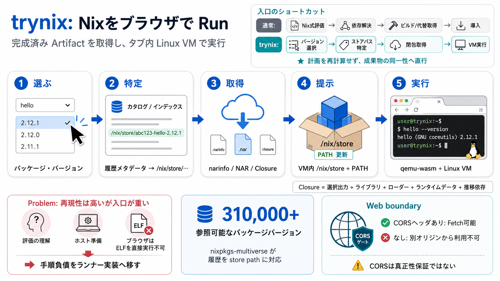

評価の理解
Nix式を評価し、依存関係とビルド計画を確定する。初見では成果物までの経路が長い。

Browser-native Nix
trynixは、キャッシュ済みのNix store closure（依存関係を含む閉包）を取得し、WebAssembly上のLinux VMで実行する。ホストへのNix導入も、ユーザー側の評価・ビルドも要らない。
The friction
Nixは環境を正確に固定できる一方、初めて試す人には準備工程が見えやすい。trynixが取り除くのは、パッケージそのものではなく「実行までの手順負債」だ。
Nix式を評価し、依存関係とビルド計画を確定する。初見では成果物までの経路が長い。
Nix本体、設定、ビルド環境、キャッシュ設定などをローカル側で整える必要がある。
ブラウザは通常、x86_64やaarch64向けのELF実行ファイルを直接起動できない。
The shortcut
trynixの中核は、評価・ビルドをブラウザ内で再現することではない。バージョンから既知のストアパスへ直行し、Hydraが既に作った成果物を利用することだ。
Version universe
nixpkgs-multiverseは、過去から現在までのパッケージバージョンをストアパスへ結びつける。提供資料では、その参照範囲は31万超のパッケージバージョンとされる。
Execution path
外部オリジンはメタデータとストア内容を配布し、実際のLinux実行環境はブラウザのタブ内に置かれる。Webページは、成果物の検索・搬送・起動をつなぐ制御面になる。
静的ページから実行要求を組み立てる。
nixpkgs-multiverseが履歴を索引化する。
CORS対応の静的配信元を参照する。
VM内のPATHへ対象パッケージを提示し、ネイティブ成果物を実行する。
The runnable unit
実行対象のバイナリだけを持ってきても、ランタイム依存が欠ければ動かない。Nixの閉包は、対象ストアパスから到達可能な依存ストアパスをまとめて実行可能な集合にする。
PATHへ追加する主役。ただし、これ単体が実行環境の全体ではない。
The browser gate
ブラウザは、別オリジンのキャッシュを自由には読めない。配信元が適切なCORSヘッダを返すことで、trynixはnarinfoやNARを直接取得できる。
Click to execution
ユーザー操作はバージョン選択に圧縮されるが、内部では成果物の識別、閉包取得、ストア提示、VM再開、実行準備が順番に進む。
パッケージ名と試したいバージョンを選ぶ。
履歴メタデータから対象ストアパスを特定する。
narinfoを読み、必要な閉包のNARを取得する。
VM内のNix storeへ内容を提示し、PATHを構成する。
Linux VMを起動または再開し、対象コマンドを実行する。
Perceived speed
WebAssembly上のエミュレーションとLinuxブートには本質的なコストがある。trynixは、その重い処理を事前ダウンロードとスナップショット再開で操作のクリティカルパスから外す。
qemu-wasmエンジン、Linuxカーネル、初期イメージ、スナップショットをユーザー操作より前に用意する。
起動処理を一度済ませた状態を保存し、毎回ゼロからLinuxを立ち上げる経路を避ける。
後続の実行ではスナップショットからVMを戻し、対象閉包の提示とコマンド実行へ早く移る。
Serverless, precisely
HTMLやNARを配るWebサーバは必要だが、ビルドや実行を肩代わりする常駐バックエンドは要らない。実行計算の責務が、リモートAPIではなくブラウザタブへ置かれる。
Beyond public caches
必要なのは特定の運営主体ではなく、ブラウザから読めるバイナリキャッシュとしての配信契約だ。CORSを許可した静的配信が成立すれば、自作ストアパスも実行候補になる。
静的ファイルとしてnarinfoとNARを配置し、ブラウザから読めるヘッダで配信する構成が考えられる。
組織やプロジェクト独自の成果物を公開し、trynix側から直接参照できる可能性がある。
標準的なキャッシュ構造、到達可能性、CORS、必要な完全性検証を満たせば配信元になり得る。
Reality check
ブラウザ内Linuxは万能なローカルマシンではない。エミュレーション、タブメモリ、ブラウザとアーキテクチャの差が、実行できるワークロードを絞る。
ネイティブ命令のエミュレーションや動的変換が入り、初回実行や計算量の大きい処理は遅くなり得る。
提供資料が示す現在のタブ上限の目安。閉包全体が収まらない巨大な依存ツリーは成立しにくい。
対象ELF、CPUアーキテクチャ、必要syscall、ブラウザ実装、外部デバイス依存を個別に確認する必要がある。
The missing contract
キャッシュから即実行する設計では、配布元からVMまでの信頼連鎖が製品要件になる。提供資料だけでは、署名検証、隔離、ネットワーク方針、監査の詳細は確認できない。
誰がどの入力からビルドした成果物か。許可するキャッシュと鍵を定義する。
narinfo、NAR、ストアパスの署名・ハッシュを、実行前にどこまで検証するか。
VM境界、ブラウザ権限、永続領域、ホストとの入出力範囲を明確にする。
ネットワーク接続、リソース上限、ログ、失効、インシデント時の追跡を設計する。
Runnable sharing
trynixの価値は、Nixをブラウザで見せる派手さだけではない。固定された成果物と実行環境をリンクに圧縮し、レビューや再現の待ち時間を減らせる。
CIが生成したストアパスを、レビュアがローカル環境を汚さずクリックして確認する。
AIエージェントが作ったツールや修正を、再現可能な実行URLとして人間へ返す。
バグ報告、教材、ドキュメントに、問題や例を再現する固定バージョンの環境を添える。
More than a demo
Nixの成果物同一性、Webの静的配布、ブラウザの隔離、VMスナップショットを一本の体験へ結んだことが新しい。各要素より、境界を越えた統合が普及可能性を生む。
APIを呼ぶのではなく、Linux実行環境そのものをタブ内へ持ち込む。
事前取得と再開により、ユーザーが感じる起動コストを抑える。
学習者は設定作業より先に、固定バージョンの挙動を比較できる。
CI、レビュー、バグ報告の節目に「実行リンク」を差し込める。
配布の容易さと実行許可を分離し、組織ポリシーで統制する必要がある。
Claims and unknowns
魅力的なデモを実用性と混同しないため、提供資料が述べる事実と、一次資料・検証が必要な項目を分ける。数値や対応範囲は時点依存である。
Adoption filter
「ブラウザで動くか」だけでは判断できない。閉包サイズ、必要性能、成果物の信頼、ブラウザ互換性、隔離要件を導入前のゲートにする。
The takeaway
trynixは、Nixの再現性をWebの配布性へ接続し、「試す前の準備」を成果物の検索・取得・タブ内実行へ置き換える。実用化の鍵は、速さの演出だけでなく、信頼と適用範囲を明文化することだ。
Source map
本デッキは提供された事前知識、要約、論点、FAQ、意見を一次の材料として圧縮した。実装採用時は、各プロジェクトとWeb標準の最新一次資料で数値・互換性・安全性を再確認する。
アーキテクチャ、31万超という規模、約1.5GiBという目安、利用例、セキュリティ上の不足情報の根拠。
Store paths、closure、narinfo、NAR、binary cache protocol、署名と代替取得の正式仕様を確認する。
バージョンからストアパスへの対応、履歴の範囲、キャッシュ可用性、独自成果物の配信条件を確認する。
対応CPU、実行方式、スナップショット、ブラウザ制限、メモリモデル、性能特性を実装資料で確認する。
Access-Control-Allow-Origin、プリフライト、レスポンス可視性、オリジン境界の現在のブラウザ挙動を確認する。
脅威モデル、許可信頼鍵、ネットワーク方針、互換性試験、監査ログ、キャッシュ運用とコストの基準を作成する。
309,529 package versions across 32,101 attributes, from 1,542 revisions 2012-07-05 → 2026-09-02, newest `3ed67ec0a4d3` …
`revisions.json` is one ordered array of every revision from Nixpkgs, 1,393 as of this writing, from 2017 to 2026.33A Ni…
# Welcome to Cachix documentation¶ Cachix is a service for Nix binary cache hosting. New to Cachix? Read What is a Bin…
``` $ StorePath: /nix/store/gdh8165b7rg4y53v64chjys7mbbw89f9-hello-2.10URL: nar/gdh8165b7rg4y53v64chjys7mbbw89f9.narCo…
I definitely want to limit it to commits that were channel bumps so that they have access to the cache. I will update t…